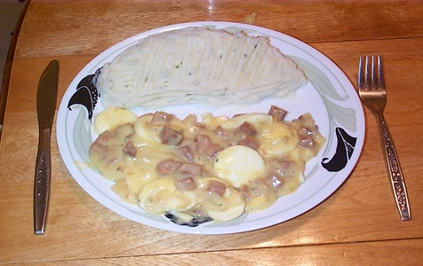

Porc
2 Recettes de Filets de Porc
Prep : 15min | Cuisson : 5min
Béchamel aux œufs et jambon
Prep : 10-15min | Cuisson : 15min | Portion :4

Bouchées de Porc aux Ananas
Prep : 15min | Cuisson : 5min | Portion :4

Carré de porc laqué au miel et fumée de mesquite
Prep : 15min | Cuisson : 5min | Portion :4
Côtes Levées Barbecue
Prep : 15min | Cuisson : 5min | Portion :4
Côtes levées où ailes de poulet
Prep : 15min | Cuisson : 5min | Portion :4
Côtelettes de Porc à la Sauce Rouge
Prep : 15min | Cuisson : 5min | Portion :4
Côtelettes de Porc avec Sauce Sucrée
Prep : 15min | Cuisson : 5min | Portion :4
Côtelettes de Porc avec Sauce
Prep : 15min | Cuisson : 5min | Portion :4
Côtelettes de porc barbecue
Prep : 15min | Cuisson : 5min | Portion :4
Côtelettes de porc parfumées au Pesto
Prep : 15min | Cuisson : 5min | Portion :4
Côtelettes de Porc Sauce au Diable
Prep : 15min | Cuisson : 5min | Portion :4
Côtelettes de Porc Simple Cuite au Four
Prep : 15min | Cuisson : 5min | Portion :4
Côtelettes Miel et Ail
Prep : 15min | Cuisson : 5min | Portion :4
Filets de Porc Shake N Bake et Sauce Moutarde
Prep : 15min | Cuisson : 5min | Portion :4
Fricassé de Jambon
Prep : 15min | Cuisson : 5min | Portion :4
Fusilli aux Tomates et Boulettes de Porc
Prep : 15min | Cuisson : 5min | Portion :4
Jambon à l'érable
Prep : 15min | Cuisson : 5min | Portion :4
Jambon en Tranches
Prep : 15min | Cuisson : 5min | Portion :4
Linguine carbonara allégés au jambon
Prep : 15min | Cuisson : 5min | Portion :4
Mignons de Porc Sauce moutarde
Prep : 15min | Cuisson : 5min | Portion :4
Pain de viande au jambon
Prep : 15min | Cuisson : 5min | Portion :4
Pâte Roulée aux Jambon
Prep : 15min | Cuisson : 5min | Portion :4
Ragoût de pattes de porc et poulet
Prep : 15min | Cuisson : 5min | Portion :4
Rôti de longe de porc farci au Chorizo
Prep : 15min | Cuisson : 5min | Portion :4
Rôti de Porc et Patates Jaunes
Prep : 15min | Cuisson : 5min | Portion :4
Rôti de Porc Facile en Sauce Sucrée
Prep : 15min | Cuisson : 5min | Portion :4
Rôti de porc pané
Prep : 15min | Cuisson : 5min | Portion :4
Tranches de jambon glacées
Prep : 15min | Cuisson : 5min | Portion :4